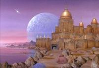

Rigel VII
|
|||
|  |
Pianeta sul quale vengono uccisi numerosi membri
dell'Enterprise sotto il comando del capitano
Christopher Pike nel
2254.
Riciclati
- La matte della fortezza di Rigel VII è stata riutilizzata in seguito come esterno del castello di Flint in Requiem for Methuselah.